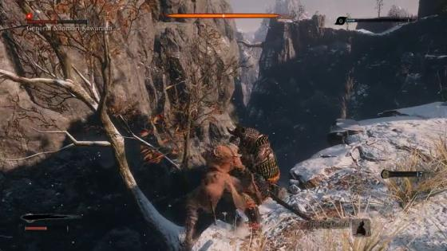
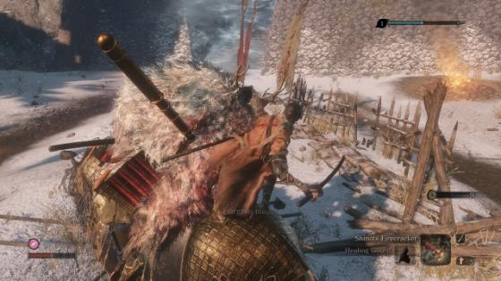
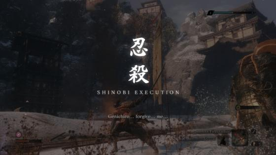

一
- 成就11-21 · 从标题菜单到爬出井底，全程无人操作：114 秒，蹬墙 9 轮。
- 问题区域名横幅在坑里也会弹出，脚本以为“已经出坑”，发出去的视频只好撤回。一口气改好几处、每次只测两三回，约 20 次只成 1 次。
- 解法出坑的判据换成“画面里看得到天空”。固定基线，一次只改一处，录满 6 次再下结论：3/6 → 5/6。
 只狼：从新档开始的整局流程（同一个游戏世界）已击败鬼庭刑部雅孝，继续往苇名城里走（Windows 实机）。
只狼：从新档开始的整局流程（同一个游戏世界）已击败鬼庭刑部雅孝，继续往苇名城里走（Windows 实机）。| 里程碑 | 状态 | 说明 |
|---|---|---|
| 开场 | 完成 | 出生点前进、拾取信件 |
| 墙跳出坑 | 完成 | 两段墙跳爬出开场深坑 |
| 苇名水库 | 完成 | 通过水库岩壁 |
| 贴墙转角 | 完成 | 贴墙绕过外转角进入草丛 |
| 潜行草丛 | 完成 | 钻进草丛，等守卫对话结束，走到爬行通道 |
| 悬崖与塔 | 完成 | 沿悬崖挂边横移、翻上崖顶，到达塔 |
| 山内重则 | 完成 | 从九郎的房间（存档）出发，穿过庭院，击败山内重则 |
| 序章完成 | 完成 | 击杀守卫、拿药丸、进九郎的门，与苇名弦一郎剧情战后来到荒废寺 |
| 河原田直盛 | 完成 | 从鬼佛（存档）出发，绕路潜行到其身后，下落忍杀后正面交战，击败河原田直盛 |
| 赤鬼 | 完成 | 从存档出发一次不间断运行：潜行忍杀打掉第一段生命，蹬墙跳上白墙，在墙顶攻击至架势满后跳下忍杀，击败赤鬼 |
| 阶梯鬼佛 | 完成 | 从城门路鬼佛（存档）出发，钩上门楼和屋顶，一路钩索绕行到外城墙·阶梯鬼佛（22 次中 14 次成功） |
| 阶梯鬼佛→赤鬼 | 完成 | 从阶梯鬼佛（机器人自己的存档）出发，经屋顶和院子到赤鬼处，在屋檐上作战，两次跳下忍杀击败赤鬼（中途死亡一次、回生；不是每次都成功） |
| 新档→赤鬼 | 完成 | 同一个游戏世界从“新游戏”一路打到击败赤鬼（经河原田直盛、阶梯鬼佛）；各段分开运行，段间只读机器人自己存的档，没有人或 LLM 直接操作游戏 |
| 葫芦种子·桥下谷 | 完成 | 同一个世界里，把葫芦种子交给艾玛（药葫芦 2 次），再穿过山内典膳的院子到达桥下谷鬼佛；操作都是机器人的输入，各步由 LLM 逐个下达，步间游戏暂停 |
| 大蛇谷岩架 | 完成 | 从桥下谷鬼佛连续空中钩索下到大蛇谷，再不停留地穿过草丛钩上神社岩架（后一段从练习存档出发，4 次中 1 次）；操作都是机器人的输入，各步由 LLM 逐个下达 |
| 大蛇草台 | 完成 | 从神社岩架穿过洞穴，跳上大蛇身下的草台（从练习存档出发；最后一跳由 LLM 逐步下达时成功一次，自动 7 次都没成功）；操作都是机器人的输入 |
| 刺中大蛇之眼 | 完成 | 大蛇谷一次跑通：从机器人自己的存档出发，穿过草丛、洞穴和草台，贴墙横移、爬到轿子，刺中大蛇的眼睛（脚本自己跑完，当天 7 次完整尝试中第 1 次成功） |
| 过大蛇·城门要塞 | 完成 | 刺眼之后穿过洞穴、连续钩索上城墙，到达苇名城·城门要塞鬼佛并存档（到刺眼后墙后缺口为止脚本自动跑，之后由 LLM 逐步下达）；操作都是机器人的输入 |
| 刑部战场 | 完成 | 从城门要塞鬼佛冲过士兵院子到刑部战场，一条命令 6 次中 5 次 |
| 鬼庭刑部 | 完成 | 机器人用 LLM 写好的战斗脚本打完整场 435 秒，击败鬼庭刑部雅孝（马上忍杀）；战斗中没有人或 LLM 操作 |
| 最终 Boss | 未开始 |
不用神经网络，只靠几个看画面的小程序，和一版一版改出来的脚本，从新开游戏的井底一路打到苇名城门。这张图记下每一站：什么时候到的，发现了什么问题，怎么解决的。
每一站：什么时候到的，发现了什么问题，怎么解决的。



三天，四十六版脚本，两百五十多场。没有哪一处修改单独赢下这一仗；每解决一个问题，他的架势条多涨一格。


“不要再随机重试了，要多分析。”
一帧一帧找原因，一次只改一处。
“太贵了，用传统的方法。”
全程是经典图像处理和脚本，没有一个神经网络。
“开环的总是会失败的，基本过不去的。”
地标 → 动作 → 检查，用看得见的事件代替定时器。
“战斗之前一定要标好方向，记下一个帧来。”
自己存的画面，比别人的视频好认得多。
读葫芦数，读纸人数。
十分钟的按键测试，解决了三天统计没解决的问题。
“多进攻，不要总想防守，进攻才能干掉敌人。”
对手血越少，架势涨得越快。
数字来自每一场对局的按键日志、逐帧画面和提交记录；图片截自脚本自己的对局录像。日期为 2026 年。 资料来自只狼开发分支上的里程碑整理。
只狼：机器人第五次击败鬼庭刑部，只用 220 秒，一次没死（之前最快 284 秒）。这是 LLM 改出的进攻型打法的第一场：钩索连击命中后追加压制，架势到 0.75 就收割，0.6 起连扔爆竹。整场录像见“录像与数据”（Windows 实机）。只狼：机器人第四次击败鬼庭刑部（415 秒，同一版战斗脚本）。另外整理好了从井底到鬼庭刑部的一步一步记录：十二站各自遇到的问题和解法，以及打刑部的十二个问题（Windows 实机）。只狼：机器人第三次击败鬼庭刑部（431 秒）。LLM 根据战斗记录改了战斗脚本：钩索攻击之后分两段砍，中间防住刑部 3.6–3.8 秒后的反击；钩索闪光后的 1.0–3.4 秒最安全，血少时在这里喝葫芦（6 次中 6 次成功）；靠墙时冲刺离开。战斗中没有人或 LLM 操作，胜利逐帧核对过（Windows 实机）。只狼：机器人第二次击败鬼庭刑部，这次 284 秒（第一次 435 秒）。现在每场都从城门要塞存档重新开始连续打，赢了由战斗脚本自己从画面上认出来；每场胜利都逐帧核对过（Windows 实机）。只狼：击败鬼庭刑部雅孝！同一个新档世界，从城门要塞鬼佛出发，机器人自己冲到战场，用 LLM 写好的战斗脚本打完整场 435 秒（一阶段 279 秒、二阶段 156 秒），最后在马上忍杀。战斗中没有人或 LLM 操作。录像（最后 90 秒和整场 2 倍速）见“录像与数据”（Windows 实机）。只狼：同一个世界过了大蛇：刺眼之后穿过洞穴、连续钩索上城墙，到达苇名城·城门要塞鬼佛并存档（到刺眼后墙后缺口为止由脚本自动跑，之后由 LLM 查看画面后逐步下达）。之后从鬼佛冲过士兵院子，站上刑部战场上方的屋顶（4 次中 1 次）；冲到刑部战场现在一条命令 6 次中 5 次成功。第一次和鬼庭形部雅孝交手输了，之后 7 场测量战斗也都输了，刑部的生命最多掉了 9%：要赢得像速通玩家一样一刀一刀弹开，还缺一个出刀前的提示。画面上的操作都是机器人的输入。录像见“录像与数据”（Windows 实机）。只狼：大蛇谷一次跑通，刺中大蛇的眼睛。同一个世界，从机器人自己在落草前约 40 秒存的档出发，脚本一次跑完约 3 分钟：草丛、神社岩架、洞穴、跳上草台、蹲着从大蛇身下走过、贴墙沿窄岩架横移、爬到轿子，刺中大蛇眼睛。全程没有人或 LLM 直接操作游戏；这是当天 7 次完整尝试中第一次成功。从轿子往苇名城鬼佛的路还没走通。录像见“录像与数据”（Windows 实机）。只狼：在大蛇谷里继续往前：从神社岩架跑到洞口的紫色残影处，穿过洞穴，沿着土丘跳上大蛇身下的草台，蹲在高草里没被发现。这一段从练习存档出发；最后这一跳是 LLM 一步一步下达时成功的一次，自动跑的 7 次都没跳上去（雾里从洞口看不到草台，停下来看又会被大蛇咬死）。画面上的操作都是机器人的输入。录像见“录像与数据”（Windows 实机）。只狼：同一个世界继续往刑部方向走。从桥下谷鬼佛顺着峡谷连续空中钩索，下到大蛇谷（2 次中 2 次）；在草丛里停留会被大蛇咬死，于是改成落地不停、冲刺起跳钩上空中钩点，站上神社岩架（从练习存档出发，4 次中 1 次）。另外在山内典膳的院子里从松树上下落忍杀了一个士兵（6 次中 4 次），但之后的正面战都输了，山内典膳本人还没碰到。画面上的操作都是机器人的输入，各步由 LLM 逐个下达，步间游戏暂停。录像见“录像与数据”（Windows 实机）。只狼：同一个新档世界继续往下：回荒废寺把葫芦种子交给艾玛（药葫芦增加到 2 次），再穿过山内典膳的院子（途中死亡一次、回生）和木桥，到达桥下谷鬼佛。画面上的操作都是机器人的输入；这两段由 LLM 一步一步下达，步与步之间游戏暂停。山内典膳还没打过。两段录像见“录像与数据”（Windows 实机）。只狼：从新档一路打到击败赤鬼，同一个游戏世界。从标题画面选“新游戏”开始，经深坑、九郎的房间、山内重则、弦一郎剧情战、荒废寺、城门路鬼佛，击败河原田直盛，再到阶梯鬼佛，第二次尝试击败赤鬼。各段由不同脚本分两天运行，段与段之间读的都是机器人自己存的档（新档之后没有用任何事先准备的存档），途中有死亡、回生和读档重试；录像里每个操作都是机器人自己做的，没有人或 LLM 直接操作游戏。全程录像（4 倍速，约 20 分钟，部分段落为补录）见“录像与数据”（Windows 实机）。只狼：开始串从新档开始、不读存档的整局流程。第一段：从标题画面选新游戏，跳过开场剧情，走过深坑里的通道，蹬墙跳爬出深坑，一次运行约 2 分钟。这次中途掉回去一次，多跳了几轮；从坑底开始测 6 次成功 5 次，从标题画面开始目前只有这一次。录像见“录像与数据”（Windows 实机）。只狼：从阶梯鬼佛出发击败赤鬼。从机器人自己在“外城墙·阶梯”鬼佛留下的存档出发，经屋顶和院子来到赤鬼处，在低处屋檐上只在它站到檐下时出刀，两次架势条满后跳下忍杀，拿到念珠（约 43 分钟游戏时间）。中途第一次忍杀后被抓住死了一次，用回生复活后自己回到屋檐；运行途中 LLM 修改过战斗代码，但程序没有重启，也没有人或 LLM 直接操作游戏。之前几次尝试没有成功，所以还不是每次都能做到。录像见“录像与数据”（Windows 实机）。只狼：从“外城墙·城门路”鬼佛走到“外城墙·阶梯”鬼佛。从存档出发，冲到门前钩上门楼、再钩上脚手架屋顶，然后沿岩壁和屋檐十几次钩索、跳跃、蹬墙攀爬，到鬼佛前休息，中途不读档。当天从鬼佛存档出发 22 次尝试成功 14 次（约 64%）。录像见“录像与数据”（Windows 实机）。只狼：一次不间断地击败赤鬼。从存档出发，潜行忍杀打掉第一段生命，蹬墙跳上白墙，在墙顶攻击约 20 分钟，架势条满后跳下忍杀，拿到念珠。中途没有重启程序，也没有人或 LLM 直接操作游戏。新录像替换了之前的两段（Windows 实机）。只狼：击败赤鬼。先潜行忍杀打掉第一段生命，再从它够不到的屋檐上攻击约 35 分钟，架势条满后跳下忍杀，拿到念珠。（这两段录像已由 11-18 一次不间断运行的录像替换。）屋顶战斗的程序中途从暂停处重启过 4 次，最后一条规则来自现场提示，不是一次不间断、无人帮助的运行（Windows 实机）。只狼：击败 Boss 河原田直盛。从鬼佛出发，不被发现地绕到他身后下落忍杀，再正面交战将其击败。录像见“录像与数据”（Windows 实机）。只狼：序章完成。从击败山内重则之后出发，击杀守卫、拿到药丸、进九郎的门，护送后与苇名弦一郎交战（剧情必败），醒来到达荒废寺并拿到忍义手。录像见“录像与数据”（Windows 实机）。只狼：击败第一个中 Boss 山内重则。从九郎的房间（存档）出发，穿过庭院，两次忍杀将其击败。录像见“录像与数据”，悬崖到塔这一段也已打通，从悬崖一路到九郎房间的录像一并放上（Windows 实机）。只狼：苇名水库从墙边到爬行通道这一段加上了录像：被守卫发现后会躲到地板下等警报解除。见“录像与数据”（Windows 实机）。只狼：从贴墙转角钻进草丛，等守卫对话结束，一路走到爬行通道（Windows 实机）。只狼：过开场深坑、苇名水库岩壁和贴墙转角（Windows 实机）。